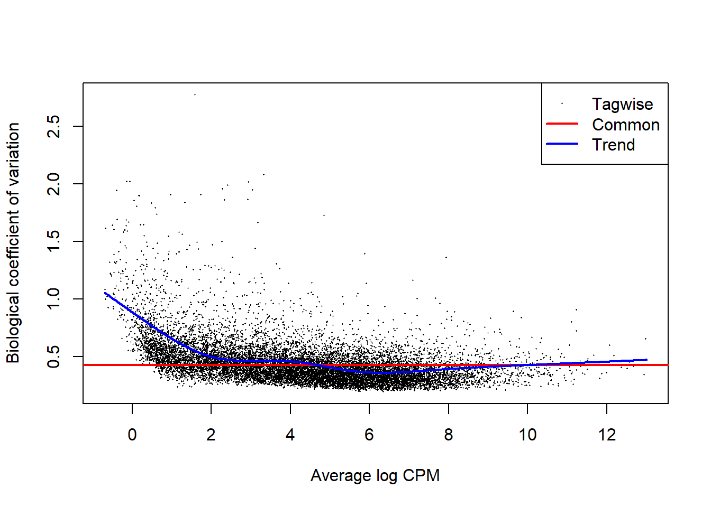

3 Male v Female DGE
3.1 Transcriptome - edgeR
3.1.3 Differential Gene Expression Analysis
3.1.3.1 DGElist
## group lib.size norm.factors
## Hg11513 female 2842670 1
## Hg1354 female 3618804 1
## Hg1403 female 6100522 1
## Hg1404 female 3533565 1
## Hg908b female 5871501 1
## Hg1274 male 3026478 1
## Hg1407 male 4238107 1
## Hg1256 female 4573826 1
## Hg1265 unknown 2979315 1
## Hg1288 female 2823770 1
## Hg266 female 3543715 1
## Hg1402 male 6560784 1
## Hg270 male 3772971 1
## Hg1261 female 1943267 1
## Hg1272 female 4708624 1
## Hg1380 female 3204059 1
## Hg1387 female 4158987 1
## Hg1397 female 4343361 1
## Hg1421 female 4508013 1
## Hg1528 female 2894695 1
## Hg861a female 5407908 1
## Hg862a female 4075756 1
## Hg934 female 3956989 1
## Hg1262 female 4653972 1
## Hg1273 female 5011031 1
## Hg1282 female 2951861 1
## Hg1283 female 4658064 1
## Hg1286 female 4284639 1
## Hg1351 female 1430600 1
## Hg1516 female 4688415 1
## Hg1527 female 3763080 13.1.3.4 Estimate Dispersion
On average, the true abundance for each gene can vary up or down by xx% (BCV) between replicates Differentially expressed = needs to vary by more than xx%
## Disp = 0.18267 , BCV = 0.4274# Dispersion trend based on gene abundance
DGE <- estimateTrendedDisp(DGE)
# Tagwise dispersion - allows different dispersion for each gene
DGE <- estimateTagwiseDisp(DGE, verbose = TRUE)## Using interpolation to estimate tagwise dispersion.
3.1.4 Exploratory Plots
3.2 Genome - edgeR
3.2.3 Differential Gene Expression Analysis
3.2.3.1 DGElist
## group lib.size norm.factors
## Hg11513 female 3894792 1
## Hg1354 female 4928497 1
## Hg1403 female 7571672 1
## Hg1404 female 4696012 1
## Hg908b female 7291936 1
## Hg1274 male 3984216 1
## Hg1407 male 5400490 1
## Hg1256 female 5728747 1
## Hg1265 unknown 3851318 1
## Hg1288 female 3740785 1
## Hg266 female 4414778 1
## Hg1402 male 8016958 1
## Hg270 male 4804685 1
## Hg1261 female 2938200 1
## Hg1272 female 6665010 1
## Hg1380 female 4719984 1
## Hg1387 female 5562169 1
## Hg1397 female 5747795 1
## Hg1421 female 5958925 1
## Hg1528 female 3655704 1
## Hg861a female 6717503 1
## Hg862a female 5273447 1
## Hg934 female 5089019 1
## Hg1262 female 5954066 1
## Hg1273 female 6511255 1
## Hg1282 female 3997507 1
## Hg1283 female 5907705 1
## Hg1286 female 5521600 1
## Hg1351 female 2230773 1
## Hg1516 female 6012343 1
## Hg1527 female 4895128 13.2.3.4 Estimate Dispersion
On average, the true abundance for each gene can vary up or down by xx% (BCV) between replicates Differentially expressed = needs to vary by more than xx%
## Disp = 0.22568 , BCV = 0.4751# Dispersion trend based on gene abundance
DGE <- estimateTrendedDisp(DGE)
# Tagwise dispersion - allows different dispersion for each gene
DGE <- estimateTagwiseDisp(DGE, verbose = TRUE)## Using interpolation to estimate tagwise dispersion.